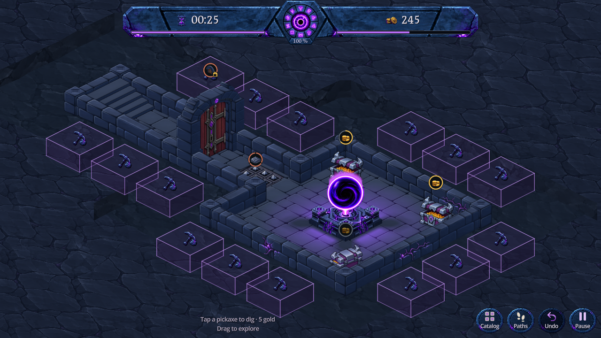

Chaque cube a maintenant une base carrée de 0,74 × 0,74 case, à la hauteur des murs. L’ancien raccourcissement des faces proches des murs est supprimé : les angles ne produisent plus de cubes plus petits. Le placement commun des rangées est conservé.

Capture Godot · 1280 × 720 · Après correction
La comparaison ci-dessus change aussi ce détail. Voir après un creusement · Voir l’appui.
Les mesures confirmaient trois tailles : 0,59 × 0,74, 0,74 × 0,59 et 0,59 × 0,59 case. Rapport avant correction. Désormais les 15 repères du donjon d’essai mesurent tous 0,74 × 0,74 × 0,313333 case. Le découpage extérieur passe de 1,20 à 1,35 case : ces 0,15 supplémentaires accueillent les faces restaurées tout en conservant la distance aux murs.
Contrôle géométrique : dimensions et projection uniformes, absence d’intersection des volumes, puis 24 creusements réellement effectués et leurs 24 annulations avec la graine 241025. Les 2 050 échecs de taille avant correction deviennent zéro échec sur 12 974 vérifications. 337 vérifications natives couvrent les trois formats, les appuis, le prix, le déplacement de caméra, le terrain et l’annulation. 7 contrôles visuels confirment que les pixels opaques de maçonnerie restent dégagés. Les occultations normales de la projection isométrique restent possibles.
Scène isolée DigBlocksPreview.tscn, sans sauvegardes joueur. Reproduction : godot --headless --path . --script res://tools/verify_dig_block_spacing.gd, puis les outils natifs verify_dig_clearance.gd et capture_dig_blocks.gd. Aucun nouvel asset graphique. Le jeu principal conserve sa présentation actuelle. Ces tests ne couvrent pas toutes les cartes possibles ; pas de validation sur téléphone physique. Mise à jour du 31 octobre 2026.